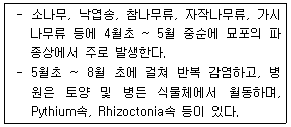
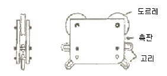

산림산업기사 (2009-05-10 기출문제)
1과목: 조림학
1. 임목의 종자채취 시기를 연결한 것으로 가장 적당한 것은?
- 소나무 - 11월
- 사시나무 - 6월
- 회양목 - 7월
- 물오리나무 - 8월
(정답률: 84%)

2. 고립목에서의 양엽과 음엽의 특징 중 양엽에 대한 설명으로 옳은 것은?
- 잎이 넓다.
- 엽록소 함량이 더 많다.
- 잎의 두께가 두껍다.
- 광포화점이 낮다.
(정답률: 65%)
3. 수목 종자의 채종원에 대하여 가장 바르게 설명하고 있는 것은?
- 수목 종자를 채취하는 모든 숲이 채종원으로 분류 된다.
- 수형목의 종자나 접수 또는 삽수로 묘목을 양성하여 채종을 목적으로 일정한 지역에 식재한 곳이다.
- 형질이 우량한 현지의 숲을 채종을 목적으로 무육하고 그 수형을 다듬는 곳이다.
- 채종원에 식재되는 묘목은 반드시 유전형질의 우수성이 확인된 수형목의 무성번식 차대 만이 사용된다.
(정답률: 75%)
4. 소나무 종자의 효율을 80%, 1g당의 종자의 알 수를 100, 가을이 되어 1m2에 남길 묘목의 수를 500그루, 득묘율을 30%로 할 때 m2당의 파종량은 약 몇 g인가?
- 15.8 g
- 20.8 g
- 25.8 g
- 30.8 g
(정답률: 75%)
5. 묘포의 입지 조건으로 적합하지 못한 것은?
- 토양은 유기물의 함량이 많고 질소 함량이 많은 식양토일 것
- 관수와 배수가 편리 할 것
- 가능한 조림지의 환경과 같은 곳일 것
- 노동력의 공급 등이 편리 할 것
(정답률: 92%)
6. 다음 중 산성토양에 저항력이 가장 약한 수종은?
- 삼나무
- 곰솔
- 신갈나무
- 아까시나무
(정답률: 45%)
7. 생가지치기 작업을 피하는 것이 좋은 수종은?
- 소나무
- 양버즘나무
- 낙엽송
- 벚나무
(정답률: 83%)
8. 광색소에서 파이토크롬(phytochrome)의 설명으로 틀린 것은?
- 분자량이 120000 Dalton 가량되는 두개의 동일한 polypeptide로 구성되어 있다.
- 햇빛을 받으면 합성이 일부 금지되거나 파괴된다.
- pyrrole 이 4개 모여서 이루어진 발색단을 가진다.
- 암흑 속에서 기른 식물체내에 가장 적게 검출된다.
(정답률: 53%)
9. 보통 소나무와 낙엽송 및 전나무 등의 제벌을 시작하는 임령은 몇 년정도이고, 제벌 시기로 가장 적합한 것은?
- 2 ~ 7년, 봄
- 7 ~ 15년, 여름
- 20 ~ 25년, 가을
- 2 ~ 7년, 겨울
(정답률: 67%)
10. 무육작업의 종류로만 조합된 것이 아닌 것은?
- 밑깍기, 덩굴치기
- 가지치기, 간벌
- 개벌작업, 파종작업
- 임지시비, 비료목 식재
(정답률: 75%)
11. 종자의 결실주기가 틀린 것은?
- 소나무, 해송, 리기다소나무는 매년 결실한다.
- 전나무, 삼나무, 편백, 들메나무는 2 ~ 3년 주기로 결실한다.
- 가문비나무는 3 ~4년 주기로 결실한다.
- 낙엽송, 너도밤나무는 10년 주기로 결실한다.
(정답률: 67%)
12. 육묘 관리에서 해가림이 필요 없는 수종은?
- 소나무
- 전나무
- 가문비나무
- 삼나무
(정답률: 80%)
13. 채종원의 입지조건으로 맞는 것은?
- 채종하는 곳이므로 대기오염 등은 별로 상관없다.
- 기후조건이 개화 결실에 맞는 곳이어야 한다.
- 채종원의 한 단위 면적은 약 1ha를 초과할 수 없다.
- 선발된 수형목의 위치에서 남쪽으로 되도록 먼 거리에 위치하고, 고도에 있어서는 다소 높은 곳이 좋다.
(정답률: 85%)
14. ha당 3000본씩 정방형 식재를 할 때의 식재거리는?
- 1.5m
- 1.8m
- 2.1m
- 2.4m
(정답률: 65%)
15. 장령림에 대한 시비효과로 부적합한 것은?
- 엽색이 더 진한 녹색으로 된다.
- 엽장과 엽량이 증가한다.
- 임내는 더 어두워지는 외관적 변화가 나타난다.
- 비배 후 3 ~ 4년이 경과한 임분에서는 흉고 직경의 성장차이를 볼 수 없다.
(정답률: 82%)
16. 조림용 묘목의 묘포 시비방법에 관한 설명으로 틀린 것은?
- 지효성 비료는 상 만들기 1개월 전에 시비한다.
- 속효성 비료는 상 만들기 직후에 시비한다.
- 이식상에서의 추비는 묘목이 활착한 9월경에 하는 것이 좋다.
- 파종상에서의 추비는 1, 2차 솎음 후 시비하는 것이 좋다.
(정답률: 60%)
17. 묘목을 심은 뒤 3 ~ 4년간 계속해서 해마다 6월 상순에서 8월 상순 사이에 실시하고, 가문비나무나 전나무등 어릴 때 자람이 늦은 수종은 5 ~ 6년까지 실시해 주어야 하는 산림보육 작업은?
- 시비
- 덩굴치기
- 풀베기
- 가지치기
(정답률: 57%)
18. 참나무속에 속하지 않는 나무는?
- 신갈나무
- 가시나무
- 밤나무
- 떡갈나무
(정답률: 53%)
19. 광산의 폐석지의 식재수종으로 가장 적합한 것은?
- 낙엽송
- 물푸레나무
- 잣나무
- 아까시나무
(정답률: 84%)
20. 개화 익년에 결실하는 수종은?
- 낙엽송
- 전나무
- 곰솔
- 편백
(정답률: 39%)
2과목: 산림보호학
21. 진균의 영양기관으로서 기주식물의 세포내에 형성하여 영양을 섭취하는 기관의 명칭은?
- 포자
- 분생자병
- 포자각
- 흡기
(정답률: 38%)
22. 솔잎혹파리 성충의 우화시기로 가장 적합한 것은?
- 5월 ~ 7월
- 8월 ~ 10월
- 11월 ~ 1월
- 2월 ~ 4월
(정답률: 87%)
23. 소나무좀의 신성충이 가해하는 곳은?
- 수간
- 잎
- 새가지
- 솔방울
(정답률: 82%)
24. 토양훈증에 사용되는 약제 시용기구로서 가장 적합한 것은?
- 살분기
- 연무기
- 주입기
- 미스트기
(정답률: 50%)
25. 수목의 병해 중 진딧물이나 깍지벌레 등의 발생 밀도와 직접적으로 관련되어 발생되는 병은?
- 그을음병
- 녹병
- 모잘록병
- 잎떨림병
(정답률: 78%)
26. 밤나무 줄기마름의 환부를 도려내고 바르는 약은?
- 지네브제
- 파네브
- 석회유
- 다이센
(정답률: 70%)
27. 곤충의 내외부 형태에 관한 설명으로 틀린 것은?
- 입틀은 입윗술 ㆍ 큰턱 ㆍ 작은턱 ㆍ 아랫입술로 구성 된다.
- 가슴은 3개의 고리마디로 구성되고 각 고리마다 3쌍의 다리, 앞가슴과 가운데가슴에는 보통 1쌍씩의 날개가 있다.
- 심장은 마디마다 다소 불룩하게 되어있어 이것 하나하나를 심실이라고 한다.
- 기체의 통로는 기문으로 하며 가슴에 2쌍, 배에 8쌍, 모두 10쌍이 원칙이지만, 종류에 따라 차이가 있다.
(정답률: 90%)
28. 묘포에 발생하는 모잘록병의 방제를 위해서 가장 중점을 두어야 하는 것은?
- 풀뽑기를 잘하여 웃자람을 돕는다.
- 칼륨비료를 충분하게 준다.
- 배수와 통풍이 잘되고 과습하지 않도록 한다.
- 복토를 두껍게 한다.
(정답률: 88%)
29. 솔나방의 월동형태로 가장 적당한 것은?
- 5령충
- 성충
- 번데기
- 알
(정답률: 63%)
30. 솜방망이를 경유에 담갔다가 꺼내어 긴 장대 끝에 매고 불을 붙여 군서하는 유충을 태워 죽이는 방법은?
- 유살법
- 경운법
- 차단
- 소살법
(정답률: 55%)
31. 대추나무 빗자루병 방제에 가장 효과적인 약제는?
- 페니실린
- 보르도액
- 석회황합제
- 옥시테트라사이클린
(정답률: 85%)
32. 소나무 재선충이 수목간 이동하는 주요 경로는?
- 종자 전염
- 매개충
- 바람
- 토양 전염
(정답률: 89%)
33. 다음이 설명하는 수목병은?

- 뿌리썩이선충병
- 모잘록병
- 뿌리혹병
- 붉은마름병
(정답률: 89%)
34. 잣나무 털녹병균이 중간기주인 송이풀이나 까치밥나무류에서 형성하지 않는 포자는?
- 녹포자
- 여름포자
- 겨율포자
- 담자포자
(정답률: 47%)
35. 솔잎혹파리는 어느 약제를 수간주사하면 효과적인가?
- 포스파미돈 액제
- 포르말린
- 석회황합제
- 제네브제
(정답률: 87%)
36. 솔노랑잎벌의 월동형태는?
- 알
- 유충
- 번데기
- 성충
(정답률: 57%)
37. 약제를 쓴 다음 발생하는 중독에 대한 증상으로 잘못된 것은?
- 동물의 종류 ㆍ 체질에 따라 차이가 나타난다.
- 동물의 성 ㆍ 연령에 따라서는 큰 차이가 없다.
- 오한, 두통, 구토 등의 증상이 나타난다.
- 약제에 의한 인축의 유해 작용을 말한다.
(정답률: 84%)
38. 임목 중 볕데기의 해를 가장 많이 받는 수종은?
- 오동나무
- 소나무
- 낙엽송
- 상수리나무
(정답률: 65%)
39. 산성비로 인한 식물에 미치는 영향이 아닌 것은?
- 잎으로부터의 양분 용탈량 감소
- 잎의 표피 왁스층의 파괴
- 잎에서의 염기용탈 증가
- 백색 또는 적갈색의 반점 형성
(정답률: 44%)
40. 뿌리혹병(crown gall)의 병원균은?
- Agrobacterium
- Pythium
- Fusarium
- Phytophthora
(정답률: 54%)
3과목: 임업경영학
41. 다음 중 고정자본재는?
- 농약
- 산림용비료
- 묘목
- 임도
(정답률: 100%)
42. 다음 중 지황조사의 항목이 아닌 것은?
- 소밀도
- 기후
- 지리
- 지위
(정답률: 65%)
43. 임업경영의 성과를 분석하는 데 있어서 틀린 설명은?
- 나무의 생육기간은 오랜 시일이 걸리기 때문에 다른 일반적인 경영에서와 같이 짧은 기간 동안의 성과를 명확하게 계산할 수 없는 경우가 많다.
- 임업경영의 성과를 해마다 분석하는 것은 특별한 일이 없는 한 가급적 피하는 것이 좋다.
- 임업경영의 성과는 임가소득, 임업소득 또는 임업 순수익으로 파악할 수 있다.
- 경영성과를 분석하는 것은 앞으로의 경영개선을 위하여 매우 중요한 것이다.
(정답률: 73%)
44. 임업에서 가장 중요한 자본재는?
- 건물
- 농기계
- 제재 설비
- 임목축적
(정답률: 95%)
45. 시장가역산법에 의한 임목을 평가하려고 할 때 계산 항목에 포함되지 않는 것은?
- 임목 육성에 투입된 비용
- 벌출 운반에 소요될 것으로 예측되는 총비용
- 벌출된 원목의 매매로부터 예측되는 최단거리 시장 가격
- 벌출 ㆍ 운반 및 매각사업에서 얻어질 수 있을 것으로 예측되는 정상이윤
(정답률: 50%)
46. 임지생산력(지위)의 평가방법이 아닌 것은?
- 토양인자를 종합하여 판단하는 방법
- 연령에 의한 방법
- 지표식물에 의한 방법
- 우세목 또는 준우세목 수고에 의한 방법
(정답률: 58%)
47. 중령림의 임목평가에 적합한 식은?
- 임목매매가식
- 임목비용가식
- 임목기망가식
- Glaser식
(정답률: 79%)
48. 통나무의 길이가 3m, 원주의 단면적이 0.5m2, 말구의 단면적이 0.3m2 일 때 스말리안(Smalian)식에 의한 이 통나무의 재적은 얼마인가?
- 0.3m3
- 1.2m3
- 7m3
- 30m3
(정답률: 79%)
49. 산림경영계획에서 소반구획의 최소 면적은?
- 0.1ha
- 1ha
- 5ha
- 10ha
(정답률: 54%)
50. 임업경영의 지도 원칙 중 최대 생산량의 원칙이며, 토지의 생산력을 최대로 추구하는 원칙은?
- 경제성의 원칙
- 생산성의 원칙
- 수익성의 원칙
- 보속성의 원칙
(정답률: 54%)
51. 법정림에서 법정상태에 관한 구비조건에 포함되지 않는 것은?
- 법정영급분배
- 법정임분배치
- 법정수확률
- 법정생장량
(정답률: 62%)
52. 임목이 벌채되는 실제 연령을 무엇이라 하는가?
- 벌채령
- 벌기령
- 법정수확률
- 법정생장량
(정답률: 30%)
53. 표준지조사는 산림(소반) 내 평균임상인 개소를 선정하여 조사하고 1개의 표준지 면적은 최소 몇 ha로 하는가?
- 0.02ha
- 0.04ha
- 0.08ha
- 1.0ha
(정답률: 39%)
54. 임지평가방법 중 사정보정과 시점보정을 필요로 하는 평가 방법은?
- 매매사례비교법
- 복성식평가법
- 수익환원법
- 수익분석법
(정답률: 40%)
55. 우리나라에서 수입 남양재를 재적 측정하는 기준 방법은?
- 5분주법
- 호퍼스법
- 스크리브너 로그 룰
- 브레레튼법
(정답률: 53%)
56. 다음 사항 중 임지의 특성이 아닌 것은?
- 임지는 임업 이외의 용도로 변경 될 가능성이 많다.
- 임지는 소모성이 없기 때문에 유지비가 적게 든다.
- 임지는 넓고 험하며 높은 지대에 위치하기 때문에 집약적 작업이 쉽다.
- 수직적으로 생육환경이 크게 다르므로 여러 가지 수종이 생육한다.
(정답률: 61%)
57. 회귀년과 관련된 내용 중 틀린 것은?
- 회귀년 길이의 장단은 택벌림의 축적과 벌채량에 서로 상반된 현상이 나타나게 한다.
- 회귀년이 짧으면 면적당 벌채될 재적이 많다.
- 연벌구면적은 회귀년의 길이에 반비례한다.
- 회귀년이 길면 임지의 축적이 적어지게 된다.
(정답률: 40%)
58. 임업경영자산 중 유동자산으로 맞는 것은?
- 토지
- 구축물
- 대동물
- 미처분 임산물
(정답률: 87%)
59. 총비용과 총수익이 같아져서 이익이 0(zero)이 되는 판매액의 수준을 무엇이라 하는가?
- 고정비
- 변동비
- 손익분기점
- 손실영역
(정답률: 84%)
60. 산림평가에 영향을 끼칠 수 있는 주요 구성내용이 아닌 것은?
- 원목
- 임지
- 부산물
- 임목
(정답률: 52%)
4과목: 산림공학
61. 임도의 합성물매가 5%이고, 종단물매가 4%이면 외쪽 물매는 얼마인가?
- 2%
- 3%
- 4%
- 5%
(정답률: 69%)
62. 물매가 1:1보다 완만한 비탈면이나 평탄한 나지에 안정 녹화를 목적으로 뜬떼를 전면적으로 떼붙이기 하는 공법은?
- 평떼붙이기공법
- 선떼붙이기공법
- 줄떼붙이기공법
- 새심기공법
(정답률: 62%)
63. 작업줄로 이용되는 로프의 절단하중이 8 ton 경우 이 와이어로프에 걸리는 하중의 최대값은 얼마일가? (단, 작업줄의 안전계수는 4.0이다)
- 1 ton
- 2 ton
- 3 ton
- 4 ton
(정답률: 65%)
64. 토양 삼상의 형태는?
- 액상, 고상, 기상
- 액상, 교질상, 토립상
- 토상, 교질상, 액상
- 교질상, 토립상, 고상
(정답률: 60%)
65. 비탈면의 처리를 비탈안정공법과 비탈녹화공법으로 구분할 때 비탈안정공법에 속하는 것은?
- 새집 공법
- 격자틀 붙이기 공법
- 선떼붙이기 공법
- 차례수벽 공법
(정답률: 79%)
66. 황폐계천유역 중 토지이용이 다양해지고 마을이 형성된 경우가 많아 주로 모래막이, 수로내기 등의 공사가 이루어 지는 곳은?
- 토사생산구역
- 토사유과구역
- 토사퇴적구역
- 토사조절구역
(정답률: 65%)
67. 임도망을 정비하였을 때 얻을 수 있는 효과로 틀린 것은?
- 기계의 작업이 용이하며 임산물을 신속하게 대량 반출 할 수 있다.
- 작업조건이 향상되고 기계의 도입이 용이하나 작업 방법의 개선 및 작업능률의 향상에는 영향이 없다.
- 반출비가 경감되어 저질재의 집약적 이용이 가능하게 되어 벌출적지의 갱신이 용이 하게 된다.
- 지역산촌의 교통로가 되어 생활의 향상과 지역 산업의 발전에 기여할 수 있다.
(정답률: 65%)
68. 물침식을 우수침식, 하천침식, 지중침식, 바다침식으로 구분했을 때 우수침식에 속하지 않는 것은?
- 면상침식
- 누구침식
- 구곡침식
- 용출침식
(정답률: 65%)
69. 임업기계화의 목적과 거리가 먼 것은?
- 생산비용의 절감
- 노동생산성의 향상
- 중노동으로부터 해방
- 임지 및 자연환경보전
(정답률: 80%)
70. 사초심기공법 중 사초를 식재하는 방법이 아닌 것은?
- 줄심기
- 망심기
- 다발심기
- 덮어심기
(정답률: 50%)
71. 임도 시공 중 깍아낸 곳에서 가까운 곳에 흙을 쌓는 근거리 운반의 경우 불도저는 성토운반의 최대거리를 얼마로 하는가?
- 40m
- 50m
- 60m
- 80m
(정답률: 57%)
72. 시멘트에 탄산나트륨과 탄산칼슘을 넣으면 어떻게 되는가?
- 느리게 굳는다.
- 빨리 굳는다.
- 동해에 강하다.
- 방수효과가 있다.
(정답률: 56%)
73. 아래 그림 반송기의 명칭과 그 특징 설명이 옳은 것은?

- 편지형반송기로, 한쪽이 열려 붙었다 떼었다 하기가 쉽다.
- 내장형반송기로, 가는 순환줄로 큰 양력을 얻을 수 있다.
- 양지형반송기로, 보통 시브도르레의 축은 반송기의 양쪽에서 측판으로 지지한다.
- 겸용형반송기로, 중간지지기가 있을 때 탈착이 가능하다.
(정답률: 50%)
74. 임도의 밀도란 무엇인가?
- 임도의 총연장 거리
- 임도의 넓이
- 국가가 소유하고 있는 총연장 거리
- 산림면적 1ha당 임도의 연장거리
(정답률: 65%)
75. 산림자원의 조성 및 관리에 관한 법률 시행규칙에서 규정하고 있는 간선임도의 유효 너비는 몇 m를 기준으로 하는가? (단, 길어깨 ㆍ 옆도랑의 너비를 제외한 임도의 경우이다)
- 3.0m
- 3.5m
- 4.0m
- 4.5m
(정답률: 67%)
76. 임도망의 배치 모델의 적정성을 분석하기 위한 평가 지표가 아닌 것은?
- 집재불능지점비율
- 개발지수
- 평균집재거리
- 임도선형
(정답률: 42%)
77. 돌쌓기 공사에 사용되는 공법이 아닌 것은?
- 돌망태 공법
- 메쌓기 공법
- 찰쌓기 공법
- 켜쌓기 공법
(정답률: 58%)
78. 사방댐의 설계요인 중에서 위치의 결정에 대한 설명 중 맞는 것은?
- 댐의 위치는 계상에 사력층이 존재하는 것을 원칙으로 한다.
- 댐의 위치는 상류부가 좁고, 댐자리가 넓은 곳이 적당 하다.
- 수계의 합류점 부근에 댐을 계획할 경우에는 합류점의 상류에 설치한다.
- 계단상의 댐은 첫 번째 댐의 추정 퇴사선이 구계상 물매를 자르는 점에 상류댐의 계획 위치가 오도록 한다.
(정답률: 38%)
79. 풀깍는 기계(예불기, 예취기)의 사용상 주의점으로 틀린 것은?
- 휴대작업시 무게 균형이 맞도록 어깨걸이 끈과 손잡이의 위치를 조절한다.
- 원형톱날은 고속 회전하므로 칼날의 정면이나 접선방향의 튕김현상에 주의한다.
- 절단부에 가지 등이 끼어 회전이 불량하면 기관의 속도를 최소로 줄이고 이물질을 제거한다.
- 급경사지에서 경사면을 따라하는 작업은 위험하므로 반드시 등고선 방향으로 진행한다.
(정답률: 67%)
80. 체인톱을 1,000,000원에 구입하였고, 추정 내용연수 (장비 수명)는 3년, 현재의 잔존가치는 700,000원일 경우 직선법에 의한 연가 감가상각비를 구하면 얼마인가?
- 100,000원
- 133,333원
- 135,000원
- 140,000원
(정답률: 66%)